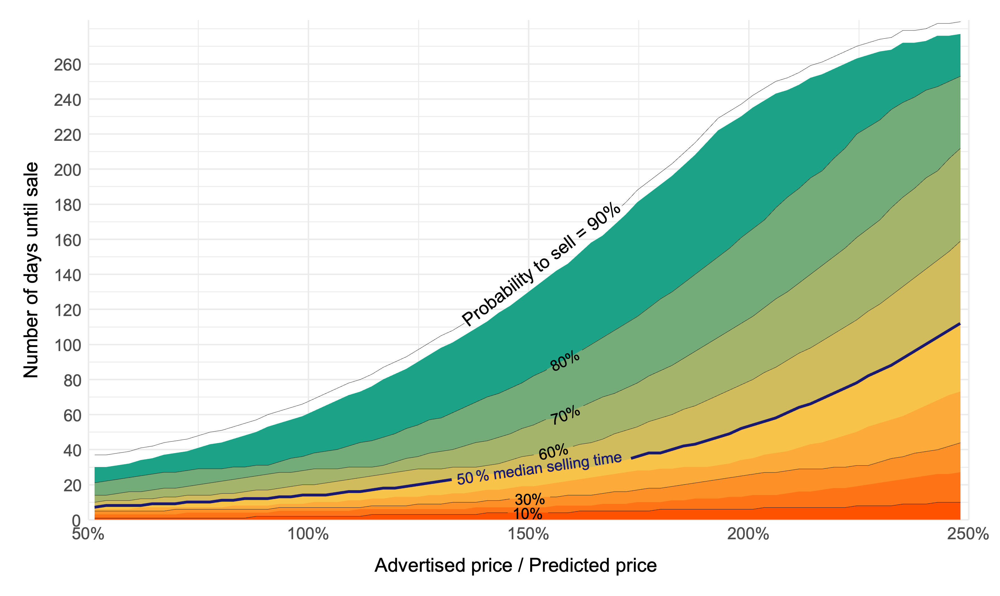

Buying a car is a major item in the household consumption basket, so participants in this market make their decisions based on carefully considered arguments. We build a survival model based on a large dataset of used car ads, revealing what makes a used car liquid (easy to sell).
Original blog post (Hungarian) available at Portfolio.hu
A car is one of the most expensive consumer goods in the life of an average household, so you have to cautiously consider what kind of vehicle you spend your money on. Everyone has their personal preferences and experiences with cars, but data-based empirical research in April sheds light on what is worth paying attention to.
It may be obvious that the price of a car are determined by comparing it with the price of other cars available on the market, but when buying, it is worth thinking about how easy it will be to find a buyer for it when we replace it.
Granát Marcell, teaching assistant at Neumann János University, and Dr. Péter Vékás, associate professor at Budapest Corvinus University, investigated what determines the market value of a car and the time required to sell it, based on the database of advertisements appearing on the most trafficked website in Hungary. The authors examine the market based on the most modern machine learning and statistical methodology.
The theoretical consideration
Cars are advertised on the Internet after a few years of use, so online advertisements can be excellent raw material for data-based analyses. The researchers collected data on available used vehicles every day for a year, so for each ad, the date of publication and sale is known, together with the information and price of the car. Based on these, the study shows what determines the price of a car and how pricing affects the expected time of sale.
Price determination using a modern machine learning approach
Price of a car depends on many details: mileage, year of manufacture, engine performance or fuel type. The author apply a number of models to estimate how much a given car would cost based on the offer price and characteristics of other cars available on the market. The value of each vehicle is estimated based on hundreds of basic information from a total of 613,604 car ads. And for this, they used modern machine learning techniques that occur in international forecasting championships, such as neural networks. These models are able to estimate the value of cars within a margin of error of +/-3 percent. Since the estimate determine how much the given vehicle would cost based on the data of other cars available on the market, the deviation from the estimate can be interpreted as overpricing or underpricing compared to the market.
The liquidity of cars
Later, when we want to sell our purchased car, we have to consider how liquid our vehicle is, i.e. in how much time and at what loss we are willing to part with it. The authors apply a so-called survival model, in which the sale time is estimated based on the degree of underpricing and overpricing and the characteristics of the car.
The results can easily be illustrated with median selling time. This is 14 days for all the cars listed on the website, which means that, on average, half of the used cars on the market are sold in this time.
What is worth paying attention to?
An important question is which properties have a significant influence on the selling time. As expected, the most important factor is the degree of overpricing or underpricing relative to the market. The figure below shows how our chances of selling our car change over a certain period of time, depending on how much we price it below or above the market.
However, this does not cause a significant change in the case of minor differences: to shorten the expected sales time by 1 day, you have to offer it 4 percent below the market, and if you offer an average car at a 7 percent higher price, even then, the sales time increases by only one day on average. However, it can be a problem if we want to sell an American model, because in this case the median sales time is 10 days longer. It’s even harder to sell two-door models and display pieces. In the case of the latter, it typically takes 33 days until someone finds a buyer. Based on the data, the jack output can significantly reduce the sales time, although in this case it is worth considering that such a car may have additional attractive features for young people, which cannot be filtered out from the data. It further improves the saleability if the car is already registered in Hungary, or if the vehicle is equipped with additonal headlights.